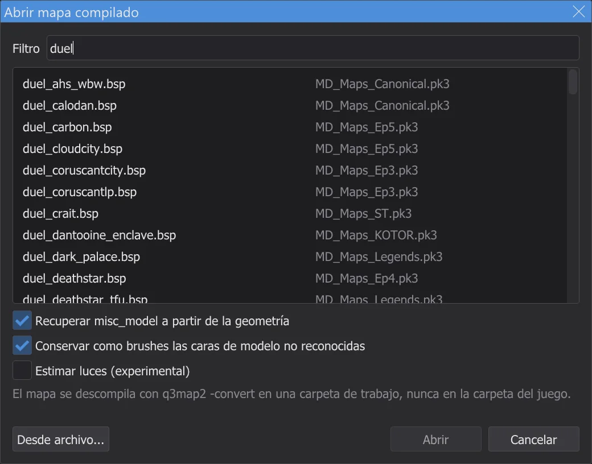
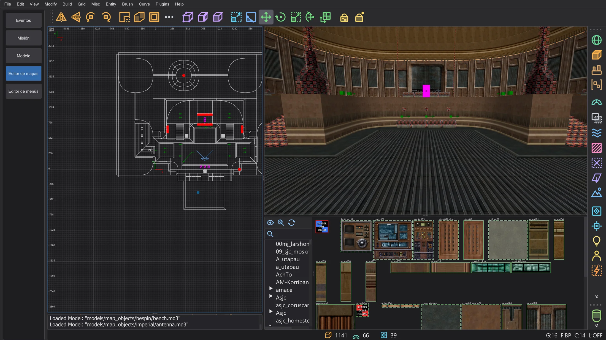
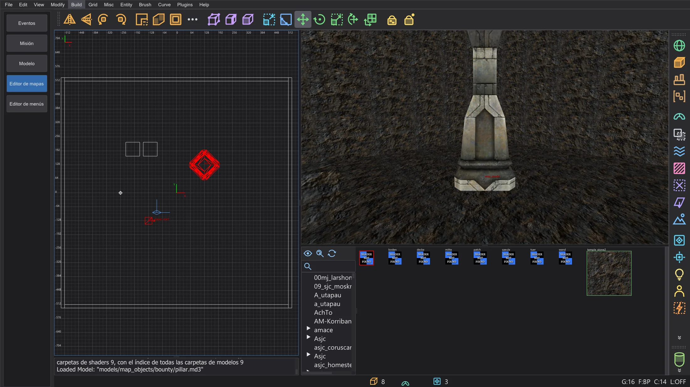
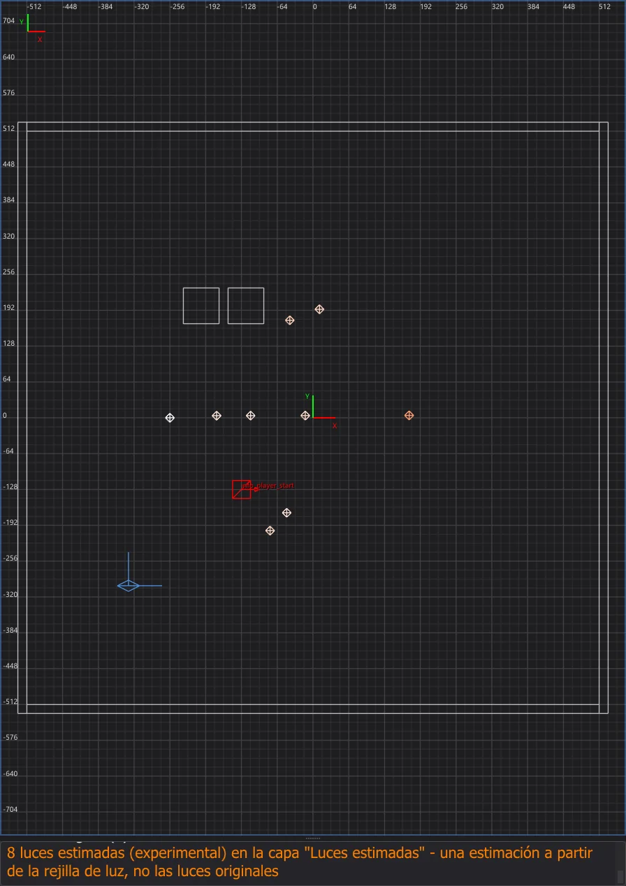
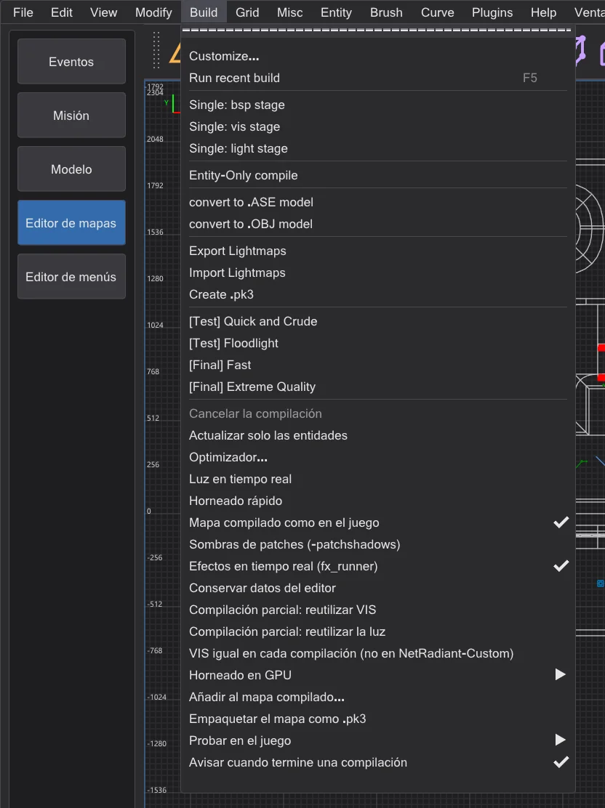

Editor de mapas: abrir y cambiar mapas terminados
Abre un mapa compilado del juego (directamente de su .pk3) con File > Abrir .bsp, cambia sus entidades y escríbelas de vuelta con Build > Actualizar solo las entidades: la geometría y la luz original quedan byte a byte como están.
Abrir un mapa compilado#

duel; cada mapa junto al archivo .pk3 desde el que lo carga el juego; bajo la lista, las opciones para misc_model y luces.- 1
File > Abrir .bsp lista cada mapa (
maps/…/*.bsp) de las carpetas del juego tal como lo ve el juego: para cada nombre solo la copia que cargaría el juego; un mod antes quebase, un .pk3 posterior antes que uno anterior. La columna derecha nombra el .pk3 o la carpeta. Escribe parte del nombre en Filtro. - 2
Haz doble clic en un mapa, o selecciónalo y pulsa Abrir. Desde archivo abre en cambio un .bsp de cualquier lugar del disco.
- 3
El editor de mapas copia el .bsp en una carpeta de trabajo de la carpeta de ajustes (
karte_bsp\<nombre>), nunca en la carpeta del juego, y lo vuelve a convertir en un mapa con q3map2-convert, como hace NetRadiant-Custom al importar un .bsp. Luego el mapa está abierto como un.map. Si el mapa abierto tiene cambios sin guardar, el editor pregunta antes.
mp/duel1 abierto desde el .pk3 del juego: 362 brushes, 66 patches y 26 entidades del .bsp; en segundo plano se volvieron a encontrar 14 misc_modely 938 triángulos de modelos no encontrados se convirtieron en 779 brushes finos en la capa Caras de modelo no reconocidas (mira Recuperar misc_model a partir de la geometría).

Un mapa compilado no es el .map original. Vuelven los brushes con sus texturas, los patches y las entidades. Lo que q3map2 hornea en el .bsp no vuelve: los modelos de las entidades misc_model, las calcomanías y las entidades de luz; los mapas compilados para Jedi Academy normalmente ya no las contienen, su luz solo existe en los lightmaps y en la rejilla de luz. En algunas caras la alineación de la textura puede diferir un poco. Compilado de nuevo con LIGHT, un mapa así recibe luz nueva, calculada sin las luces originales. Para cambiar solo entidades (puntos de aparición, NPC, objetos, scripts, claves), conserva en cambio la luz original. Tres funciones propias recuperan más: los datos del editor de un mapa compilado con Conservar datos del editor (todo, exacto), misc_model a partir de la geometría y luces estimadas.
Lo que ya no contiene un .bsp#
q3map2 quita algunas entidades mientras compila el mapa, así que no pueden volver desde el .bsp; no es un fallo de la conversión. Un ejemplo es un mapa de Jedi Academy de un probador: de 388 luces volvieron 9, de 265 misc_model ninguno, y están los 233 info_null.
- Luces sin targetname: solo las luces que se pueden conmutar en el juego se quedan en el .bsp; q3map2 quita todas las demás tras calcular su luz en los lightmaps (q3map2
writebsp.cpp, SetLightStyles). En el ejemplo son las 9 luces con targetname. ⟦Estimar luces (experimental)⟧ coloca en su lugar luces estimadas. misc_model: q3map2 hornea el modelo en la geometría del mapa y quita la entidad (model.cpp, AddTriangleModels;bspfile_abstract.cpp, UnparseEntities; salvo que el mapa se compilara con-keepmodels). Lo mismo les pasa a_decaly_skybox. ⟦Recuperar misc_model a partir de la geometría⟧ vuelve a encontrar los modelos en la geometría.func_group: sus brushes van a worldspawn (map.cpp, MoveBrushesToWorld) y el grupo en sí desaparece.- Capas, claves de grupo y la alineación exacta de las texturas: el .bsp no tiene capas; las claves de un
func_groupse van con el grupo; la alineación de una cara de brush se reconstruye a partir de los vértices de su superficie (-convert) y puede diferir un poco. - Caras sin brush: los triángulos de un modelo cuyo archivo falta y las caras de brushes no sólidos solo están en el .bsp como superficies de dibujo. No vuelven ni como brush ni como modelo; ⟦Conservar como brushes las caras de modelo no reconocidas⟧ las conserva como brushes finos.
- Todo lo demás se queda, por ejemplo
info_null(los destinos de los focos), triggers, puertas y sus claves. Los brushes hint, areaportal y skip vuelven como estructurales, como en la fuente.
Conservar los datos del editor#
En tus propios mapas no tiene por qué perderse nada. Activa Build > Conservar datos del editor (desactivado por defecto, no está en NetRadiant-Custom) antes de compilar:
- Cada paso BSP se ejecuta con
-keeplights: todas las luces se quedan en el lump de entidades. El juego libera las luces sin targetname al empezar el mapa (OpenJKSP_light), así que no cuestan nada en el juego; el optimizador cuenta sus bytes en la comprobación Lump de entidades y sus límites. - Tras la compilación,
<mapa>.bhedqueda junto al .bsp: el mapa fuente exacto con una huella de la geometría de este .bsp.misc_modelno va al .bsp (el juego lo haría aparecer como una entidad vacía), sino a este archivo. - File > Abrir .bsp encuentra el archivo junto al .bsp (también en los .pk3 del juego) y, si la huella coincide, abre el mapa fuente en vez de descompilar: vuelven
misc_model,func_group, la alineación de texturas, el detalle y las capas. Si pertenece a otra compilación, la consola lo dice y el .bsp se descompila como siempre.
Recuperar misc_model a partir de la geometría#
Sin datos del editor, los modelos son solo triángulos en el .bsp. Con Recuperar misc_model a partir de la geometría en el diálogo Abrir mapa compilado (activado por defecto, no está en NetRadiant-Custom) el editor los busca tras abrir, en segundo plano con una ventana de progreso:
- 1
Los candidatos son los archivos de modelos del juego en las carpetas de los shaders del mapa. bhed_q3map2 los carga exactamente como lo hizo el compilador (
-bhedmodels, el mismo cargador de modelos que-bsp). - 2
Cada modelo se busca en los triángulos del .bsp, también cuando q3map2 lo fusionó en superficies mayores (
forcemeta). Solo las coincidencias exactas se convierten en unmisc_modelconorigin,angleoanglesymodelscale; la consola nombra el mayor error de vértice. - 3
Las mallas de un modelo que el .bsp no tiene (el mapper las ocultó, por ejemplo con un shader nodraw) reciben un
_remapatextures/system/nodraw: el editor y una compilación nueva muestran exactamente lo que contiene el .bsp (q3map2 no emite superficies nodraw). Solo una malla que comparte su shader con una encontrada no se puede ocultar así. - 4
Los modelos llegan como un solo paso de deshacer. Sus triángulos no se duplican: la descompilación no tiene brushes para ellos, así que Actualizar solo las entidades sigue funcionando. Si los brushes o patches cambian antes de que termine la búsqueda (por ejemplo con Import), el resultado se descarta: vuelve a abrir el .bsp.

misc_model con su ángulo y su escala.En jeditemple_garden (mapa de un probador, fuente conocida) volvieron los 265 de 265 misc_model sin ningún modelo erróneo; la mayor diferencia con la fuente es de 0,002 unidades en la posición y 0,0002° en el ángulo. Los mapas originales del juego también tienen modelos de otras carpetas; lo que no se encuentra se queda en triángulos.
system/nodraw en sus lados, en la capa Caras de modelo no reconocidas. Revísalos: oculta la capa o borra lo que no necesites; pueden duplicar geometría que existe de otra forma.Estimar luces (experimental)#
Estimar luces (experimental) en el diálogo Abrir mapa compilado (desactivado por defecto, no está en NetRadiant-Custom) coloca luces donde la rejilla de luz del .bsp dice que viene la luz: desde cada punto de la rejilla se sigue la luz dirigida hacia atrás hasta que toca geometría; los puntos donde se cruzan muchos rayos se convierten en luces, y su intensidad y color vienen de la rejilla. Van a la capa Luces estimadas y llevan la clave _bhed_geschaetzt 1 (q3map2 y el juego la ignoran). Las luces que se quedaron en el .bsp no se duplican.

Conservar la luz original#

- 1
Cambia entidades: claves y valores (también de worldspawn), mueve, añade o elimina entidades de punto como puntos de aparición, NPC spawners y objetos, cambia las claves de las entidades de brushes.
- 2
Build > Actualizar solo las entidades guarda el mapa, toma una copia nueva del .bsp original y ejecuta q3map2
-onlyentsen segundo plano (salida en la consola, como al compilar). Solo se reconstruye el lump de entidades; el editor lo pone en la copia del original, así que todos los demás lumps (geometría, lightmaps, rejilla de luz, visibilidad) quedan byte a byte como estaban. - 3
La consola lo confirma con Entidades actualizadas y el número de lumps sin cambios. El resultado es
<nombre>.bspen la carpeta de trabajo; el original intacto queda a su lado como<nombre>_original.bsp. - 4
Para jugarlo, copia el .bsp nuevo en la carpeta
mapsdel juego como se describe en Editor de mapas: compilar el mapa; para un mapa de un .pk3, mejor con un nombre nuevo, para que el original del .pk3 quede como está (por ejemploduel1_nuevo.bspenmaps\mp, iniciado condevmap mp/duel1_nuevo).
misc_model son parte de la geometría. Si alguno ha cambiado desde que se abrió el mapa, Actualizar solo las entidades no ejecuta q3map2; el cuadro Actualizar solo las entidades explica que el mapa debe compilarse de nuevo con BSP, VIS y LIGHT, con luz nueva. Deshacer devuelve la geometría al original y la entrada vuelve a funcionar.-keeplights para que se queden. El propio Entity-Only compile de NetRadiant-Custom en el mismo menú también ejecuta -onlyents, pero sin la comprobación y sin poner el resultado en el original: con mapas de Jedi Outcast puede perder luces y reescribir la rejilla de luz. Para un mapa abierto con Abrir .bsp, usa Actualizar solo las entidades.